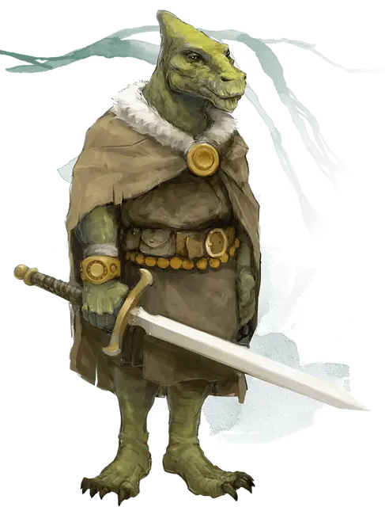

Дрэгонбэйт
Dragonbait
Средний Гуманоид (Сауриал), законно-добрый, именной НИП

Класс Доспеха 17 (кираса, щит)
Хиты 120 (16к8 + 48)
Скорость 30 футов
| мод | спас | ||
|---|---|---|---|
| СИЛ | 15 | +2 | +2 |
| ЛОВ | 13 | +1 | +1 |
| ТЕЛ | 17 | +3 | +3 |
| мод | спас | ||
|---|---|---|---|
| ИНТ | 14 | +2 | +2 |
| МДР | 16 | +3 | +6 |
| ХАР | 18 | +4 | +7 |
Навыки Атлетика +5, Медицина +6
Чувства пассивное Восприятие 13
Языки Общий
Опасность 5 (1800 опыта)
Бонус мастерства +3
Особенности
Языки. Понимает Общий, но не может говорить.
Божественное здоровье. Дрэгонбэйт имеет иммунитет к болезням.
Аура сопротивления магии. Удерживая своего святого мстителя, Дрэгонбэйт создаёт ауру радиусом 10 футов вокруг себя. Пока эта аура активна, Дрэгонбэйт и все союзные существа в ауре, имеют преимущество на спасброски против заклинаний и других магических эффектов.
Персонализация Дрэгонбэйта.
Идеал. Дрэгонбэйт испускает аромат лимона, думая об исследовании мира, наблюдении его многих чудес и помощи другим по пути. (Перевод: У него сердце исследователя.)
Привязанность. Дрэгонбэйт испускает аромат древесного дыма, помогая другу. (Перевод: Он сделал бы что-угодно для друга.)
Слабость. Дрэгонбэйт «кричит» ароматом ветчины, идя туда, куда другие боятся заходить. (Перевод: Он набросится на опасность, неважно, насколько он будет напуган.)
Действия
Мультиатака. Дрэгонбэйт совершает две рукопашные атаки оружием.
Святой мститель (Длинный меч +3). Рукопашная атака оружием: +8 к попаданию, досягаемость 5 фт., одна цель. Попадание: 9 (1к8 + 5) рубящего урона, или 10 (1к10 + 5) рубящего урона, если используется двумя руками. Целью атаки является изверг или нежить, то это существо дополнительно получает 11 (2к10) урона излучением.
Чувство мировоззрения. Дрэгонбэйт выбирает одно существо, которое он может видеть в пределах 60 футов от себя и определяет его мировоззрение, если существо не скрыто от магии прорицания заклинанием или другим магическим эффектом.
Описание
Дрэгонбэйт является чемпионом добра из расы сауриал, которая возникла на далёком мире, и представители которого имеют долгую жизнь. В Забытых Королевствах проживает очень мало сауриалов, и, как полагают, не существует никаких сельских сообществ в любой точке мира.
Язык сауриал – это сочетание щелчков и свистков за пределами человеческого слуха, поэтому Дрэгонбэйт склонен полагаться на запахи, чтобы общаться эмоциями. Чтобы быть понятым большинством говорящих существ, он должен «кричать» запах. Известные ароматы Дрэгонбэйт: сера (путаница), розы (грусть), лимон (удовольствие или радость), испечённый хлеб (гнев), фиалки (опасность или страх), жимолость (нежность или забота), древесный дым (преданность или благочестие), дёготь (победа или праздник) и ветчина (нервозность или беспокойство).
Дрэгонбэйт ростом 4 фута 10 дюймов, весит 150 фунтов и имеет сухую морщинистую шкуру. Он владеет длинным мечом «Святой мститель» и носит сине-красно-белый щит. Хотя у него есть общие особенности с паладинами, Дрэгонбэйт не является членом какого-либо класса. Используя способность, известную как Шен-стейт, он может определить мировоззрение любого существа в пределах 60 футов от него.
Неожиданная дружба. Дрэгонбэйт встретил Артуса Симбера в Порту Нянзару, и они быстрыми стали друзьями. Поскольку Артус говорил о своём стремлении воссоединиться со своей женой, Алисандой, он был утешен спокойной натурой Дрэгонбэйта и необычными методами общения. С улыбкой и кивком Дрэгонбэйт согласилась помочь Артусу. Являясь частым гостем Чульта, сауриал слишком хорошо знает опасности джунглей.
Использование Дрэгонбэйта. Дрэгонбэйт никогда не был в Ому и не знает, где находится город. Если персонажи убедят Артуса Симбера помочь им уничтожить Поглотитель душ, Дрэгонбэйт тоже захочет помочь.